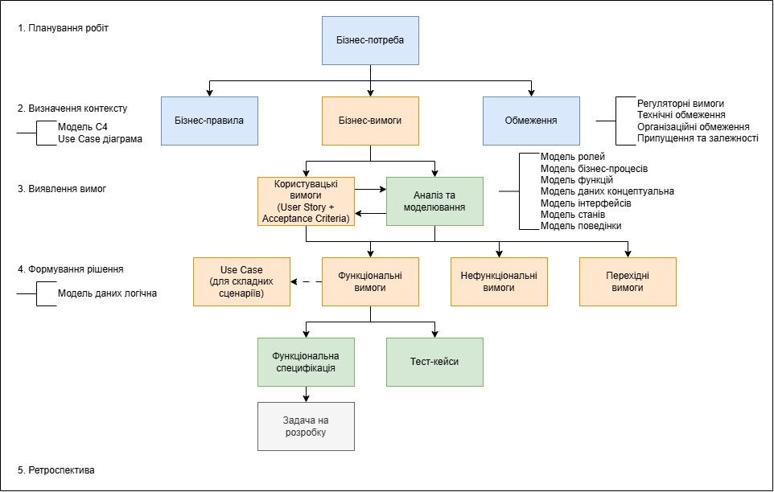

Базові поняття
- Базова концептуальна модель бізнес–аналізу (ВАССМ)
- Вимоги та рішення
- Класифікація вимог
- Зацікавлені сторони
- Методика бізнес–аналізу
Базова концептуальна модель бізнес–аналізу (ВАССМ)
| Базові поняття | Опис | Відповідає на питання |
|---|---|---|
| Зміни |
Мета змін — підвищити продуктивність підприємства. Ці
вдосконалення є цілеспрямованими та керуються
за допомогою бізнес–аналізу.
Див. також Глосарій |
Якого роду зміни ми здійснюємо? |
| Потреба |
Потреби можуть спричиняти зміни, спонукаючи зацікавлені сторони
до дій. Зміни, своєю чергою, також можуть породжувати
потреби, знижуючи або підвищуючи цінність наявних рішень.
Див. також Глосарій |
Які потреби ми намагаємося задовольнити? |
| Контекст |
Зміни відбуваються в певному контексті. Контекст —
це все, що стосується зміни в межах
її середовища. Контекст може включати настрої, види
поведінки, переконання, конкурентів, культуру, демографічні
характеристики, цілі, органи державної влади, інфраструктуру,
мови, втрати, процеси, продукти, проєкти, продажі, пори року,
термінологію, технології, погоду та будь–які інші
елементи, що відповідають цьому визначенню.
Див. також Глосарій |
У яких контекстах перебуваємо ми та рішення? |
| Зацікавлена сторона |
Зацікавлені сторони, як правило, можуть бути визначені
з погляду їхньої зацікавленості у зміні, впливу зміни
на них та їхнього впливу на зміну. Зацікавлені
сторони групуються відповідно до їхнього відношення
до потреб, змін або рішень.
Див. також Глосарій |
Які зацікавлені сторони залучені? |
| Рішення |
Рішення задовольняє потребу шляхом розв’язання проблеми,
з якою стикаються зацікавлені сторони, або надаючи
зацікавленим сторонам можливість реалізувати певну можливість.
Див. також Глосарій |
Які рішення ми створюємо або змінюємо? |
| Цінність |
Під цінністю можуть розумітися потенційні або реалізовані
прибутки, вигоди та покращення. Також можливе зниження
цінності у вигляді втрат, ризиків і витрат.
Цінність може бути матеріальною або нематеріальною. Матеріальну цінність можна виміряти безпосередньо. Вона часто має значну грошову складову. Нематеріальна цінність вимірюється опосередковано. Вона часто має значну мотиваційну складову, наприклад репутацію компанії або моральний дух працівників. У деяких випадках цінність можна виміряти в абсолютних величинах, але в багатьох випадках її оцінюють у відносних величинах: один варіант рішення є ціннішим за інший з погляду певної сукупності зацікавлених сторін. Див. також Глосарій |
Що становить цінність для зацікавлених сторін? |
Кожне базове поняття є рівноцінним і необхідним, визначається
через п’ять інших базових понять та не може бути повністю
осмислене без розуміння решти.
Жодне з понять не має більшої важливості
чи значущості порівняно з іншими. Разом ці поняття
формують основу для розуміння інформації, яка виявляється,
аналізується або якою управляють під час виконання завдань
бізнес–аналізу.
Вимоги та рішення
Зацікавлені сторони можуть надавати інформацію про потребу або пропонувати рішення для задоволення потреби, що розглядається. Бізнес–аналітик виявляє потребу, формує вимогу та пропонує рішення, що може стимулювати виявлення та аналіз додаткових вимог, наприклад:
| Вимога | Рішення |
|---|---|
| Переглянути дані про продажі за шість місяців за кількома підрозділами в одному представленні | Рисунок інформаційної панелі |
| Скоротити час комплектування та пакування замовлення клієнта | Модель процесу |
| Записати медичну історію пацієнта та забезпечити доступ до неї | Макет екрана, що відображає конкретні поля даних |
| Розробити бізнес–стратегію, цілі та завдання для нового бізнесу | Модель бізнес–спроможностей |
| Надавати інформацію англійською та французькою мовами | Прототип із текстом, що відображається англійською та французькою мовами |
Класифікація вимог
| Типи вимог | Опис |
|---|---|
| Бізнес–вимоги |
Формулюють цілі, завдання і результати, які описують, чому
було ініційовано зміну. Вони можуть стосуватися підприємства
в цілому, окремої сфери бізнесу або конкретної ініціативи.
Див. також Глосарій |
| Вимоги зацікавлених сторін |
Описують потреби зацікавлених сторін, які необхідно задовольнити
для виконання бізнес–вимог. Вони можуть слугувати
сполучною ланкою між бізнес–вимогами та вимогами
до рішення.
Див. також Глосарій |
| Вимоги до рішення |
Описують можливості та якості рішення, яке відповідає
вимогам зацікавлених сторін. Вони забезпечують необхідний рівень
деталізації, що дає змогу розробити та впровадити
рішення. Вимоги до рішення поділяють на функціональні
та нефункціональні вимоги.
Див. також Глосарій Функціональні вимоги
Описують можливості, якими повинно володіти рішення,
з погляду його поведінки та інформації, з якою
воно працюватиме.
Нефункціональні вимоги (вимоги до якості)
Описують умови, за яких рішення має залишатися
ефективним, або якості, якими воно повинно володіти.
Не стосуються безпосередньо поведінки або
функціональності рішення.
Перехідні вимоги
Описують можливості, якими повинно володіти рішення, або
умови, яким воно має відповідати, щоб забезпечити перехід
із поточного стану до майбутнього. Вони охоплюють
такі питання, як конвертація даних, навчання
та забезпечення безперервності бізнесу.
|
Зацікавлені сторони
Кожне завдання містить перелік зацікавлених сторін, які, ймовірно,
братимуть участь у його виконанні або на яких вплине
виконання цього завдання. Зацікавлена сторона — це фізична
особа або група осіб, з якими бізнес-аналітик, імовірно,
взаємодіятиме безпосередньо або опосередковано.
Див. також
Глосарій
Методика бізнес–аналізу
Авторський погляд на процес бізнес–аналізу
Визначити підхід до виконання бізнес–аналізу, погодити правила взаємодії учасників та сформувати план робіт, необхідний для керування процесом бізнес–аналізу
- Запит на виконання бізнес–аналізу
- План робіт з бізнес–аналізу (див. шаблон)
- Корпоративні стандарти
- Політики та правила організації
- учасники: Бізнес–аналітик
- інструменти: Текстовий редактор
- Визначити перелік артефактів, що будуть створені
- Визначити місця зберігання артефактів
- Визначити інструменти, що будуть використані
- Визначити правила комунікації
- Визначити правила управління вимогами
- План робіт з бізнес–аналізу погоджено
- Інструменти та місця зберігання артефактів підготовлено
Сформувати єдине розуміння бізнес–контексту, визначити межі проєкту, бізнес–потребу та бізнес–вимоги для подальшого виявлення вимог зацікавлених сторін і формування рішення
- Запит на виконання бізнес–аналізу
- Початкова інформація про проблему або можливість
- Наявні документи проєкту (за наявності)
- Корпоративні стандарти
- Політики та правила організації
- План робіт з бізнес–аналізу (див. Планування робіт)
- учасники: Бізнес–аналітик, Бізнес, Спонсор
- інструменти: Текстовий / Табличний редактор, Засіб моделювання
- Визначити концепцію продукту та межі проєкту
- Визначити бізнес–вимоги
- Створити глосарій термінів
- Бізнес-потребу та межі проєкту визначено
- Бізнес-вимоги та концепцію продукту погоджено
- Глосарій термінів створено
Виявити, проаналізувати та погодити вимоги зацікавлених сторін, необхідні для формування рішення
- Концепція продукту (див. Визначення контексту)
- Бізнес-вимоги (див. Визначення контексту)
- Глосарій термінів (див. Визначення контексту)
- Користувацькі вимоги (див. шаблон)
- Регуляторні вимоги (див. шаблон)
- Бізнес-правила (див. шаблон)
- Модель ролей (див. шаблон)
- Модель бізнес-процесів (див. шаблон)
- Модель функцій (див. шаблон)
- Модель даних концептуальна (див. шаблон)
- Модель інтерфейсів (див. шаблон)
- Модель станів (див. шаблон)
- Модель поведінки (див. шаблон)
- Матриця трасування вимог (див. шаблон)
- Глосарій термінів (див. шаблон)
- Корпоративні стандарти
- Політики та правила організації
- План робіт з бізнес–аналізу (див. Планування робіт)
- Концепція продукту (див. Визначення вимог)
- учасники: Бізнес–аналітик, Бізнес, Кінцевий користувач, Регулятор, Постачальник, Консультант
- інструменти: Текстовий / Табличний редактор, Засіб моделювання, Засіб комунікації
- Виявити зацікавлені сторони
- Визначити користувацькі вимоги
- Визначити регуляторні вимоги
- Визначити бізнес-правила
- Визначити нефункціональні вимоги
- Актуалізувати матрицю трасування вимог
- Актуалізувати глосарій термінів
- Зацікавлені сторони визначені
- Вимоги зацікавлених сторін погоджені
- Регуляторні правила визначені
- Бізнес-правила визначені
- Нефункціональні вимоги визначені
- Матриця трасування вимог актуалізована
- Глосарій термінів актуалізовано
- 10.01 Критерії приймання та оцінки
- 10.05 Мозковий штурм
- 10.09 Аналіз бізнес-правил
- 10.10 Групові ігри
- 10.18 Аналіз документів
- 10.21 Фокус група
- 10.25 Інтерв’ю
- 10.26 Відстеження питань
- 10.29 Ментальні карти
- 10.30 Аналіз нефункціональних вимог
- 10.31 Спостереження
- 10.32 Моделювання організаційної структури
- 10.37 Рецензування (рев’ю, перевірка)
- 10.39 Матриця ролей та повноважень
- 10.40 Аналіз першопричин
- 10.43 Список, карта або персони зацікавлених сторін
- 10.45 Опитування або анкетування
- 10.48 Користувацькі історії
- 10.50 Робочі зустрічі
Сформувати, оцінити та погодити рішення, що задовольняє визначені вимоги, а також підготувати функціональні специфікації для його реалізації
- Концепція продукту (див. Визначення контексту)
- Бізнес-вимоги (див. Визначення контексту)
- Користувацькі вимоги (див. Визначення контексту)
- Регуляторні вимоги (див. Визначення контексту)
- Бізнес-правила (див. Визначення контексту)
- Нефункціональні вимоги (див. Визначення контексту)
- Матриця трасування вимог (див. Визначення контексту)
- Глосарій термінів (див. Визначення контексту)
- Концепція рішення (див. шаблон)
- Функціональні вимоги (див. шаблон)
- Use Case (для складних сценаріїв, див. шаблон)
- Нефункціональні вимоги (див. шаблон)
- Функціональні специфікації (див. шаблон)
- Перехідні вимоги (див. шаблон)
- Модель даних логічна (див. шаблон)
- Матриця трасування вимог (див. шаблон)
- Глосарій термінів (див. шаблон)
- Корпоративні стандарти
- Політики та правила організації
- План робіт з бізнес–аналізу (див. Планування робіт)
- Концепція продукту (див. Визначення вимог)
- учасники: Бізнес–аналітик, Бізнес, Кінцевий користувач, Регулятор, Постачальник, Консультант
- інструменти: Текстовий / Табличний редактор, Засіб моделювання, Засіб комунікації, Засіб керування вимогами
- Провести аналіз обмежень бізнесу
- Провести аналіз обмежень рішення
- Провести аналіз альтернатив рішення
- Оцінити ризики
- Створити модель бізнес-процесів
- Створити модель функцій
- Створити модель даних
- Створити модель інтерфейсів
- Створити функціональні специфікації
- Актуалізувати матрицю трасування вимог
- Актуалізувати глосарій термінів
- Концепцію рішення та моделі погоджено
- Функціональні специфікації створено
- Матриця трасування вимог актуалізована
- Глосарій термінів актуалізовано
- 10.01 Критерії приймання та оцінки
- 10.12 Словник даних
- 10.13 Діаграма потоків даних
- 10.14 Добування даних
- 10.15 Моделювання даних
- 10.16 Аналіз рішень
- 10.17 Моделювання рішень
- 10.19 Оцінювання
- 10.20 Фінансовий аналіз
- 10.22 Функціональна декомпозиція
- 10.24 Аналіз інтерфейсів
- 10.33 Пріоритизація
- 10.34 Аналіз процесів
- 10.35 Моделювання процесів
- 10.36 Прототипування
- 10.38 Аналіз та управління ризиками
- 10.42 Діаграма послідовності
- 10.44 Моделювання станів
- 10.47 Варіанти використання та сценарії
- 10.50 Робочі зустрічі
- 10.02 Управління беклогом
- 10.05 Мозковий штурм
- 10.09 Аналіз бізнес-правил
- 10.18 Аналіз документів
- 10.23 Глосарій
- 10.26 Відстеження питань
- 10.29 Ментальні карти
- 10.30 Аналіз нефункціональних вимог
- 10.37 Рецензування (рев’ю, перевірка)
- 10.46 SWOT аналіз
- 10.48 Користувацькі історії
- 10.49 Оцінювання постачальника
Оцінити досягнення бізнес–цілей, ефективність рішення та процесу бізнес–аналізу, визначити напрями їх удосконалення й зафіксувати отриманий досвід
- Звіт про ретроспективу
- План удосконалення процесу бізнес-аналізу
- Корпоративні стандарти
- Політики та правила організації
- План робіт з бізнес–аналізу (див. Планування робіт)
- учасники: Бізнес–аналітик, Бізнес, Спонсор, Кінцеві користувачі, Керівник проєкту, Розробник, Тестувальник, Фахівець з впровадження, Фахівець з підтримки
- інструменти: Текстовий / Табличний редактор, Засіб комунікації, Засіб керування вимогами, Засіб аналізу метрик або звітності
- Оцінити досягнення бізнес–цілей
- Оцінити ефективність рішення
- Оцінити ефективність процесу бізнес–аналізу
- Проаналізувати відгуки зацікавлених сторін
- Виявити причини проблем та відхилень
- Досягнення бізнес-цілей оцінено
- Ефективність рішення оцінено
- Основні проблеми та їх причини визначено
- Рекомендації щодо покращення сформовано

| Етапи бізнес-аналізу | Документи, що будуть створені | Моделі, що будуть створені |
|---|---|---|
| 1. Планування робіт |
|
- |
| 2. Визначення контексту |
|
|
| 3. Виявлення вимог |
|
|
| 4. Формування рішення |
|
|
| 5. Ретроспектива |
|
- |